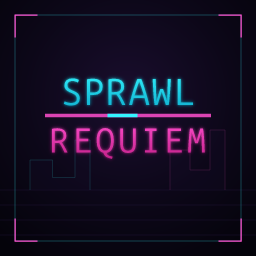

Sprawl Requiem
Seoul hört nie auf, es wird nur lauter. Über dir drängen sich die Arkologie-Türme unter einem Himmel, den die Chaebols vor Jahrzehnten verscherbelt haben - eine Decke aus Neonlicht und Werbeglühen, durch die nie ein Stern dringt. Unten, jenseits des letzten flackernden Leuchtschilds, ziehen sich die Barrens endlos hin: Rost, Monsunregen und das blaue Flackern eines Trideos, das kein Lebender mehr sieht. Das ist die Sechste Welt, Kumpel. Die Magie ist zurückgekehrt - und sie brachte kein Wunder, sondern Ghule in den Gassen, Geister, die die Toten tragen, und eine Matrix, die deinen Namen, deine Schulden und deine Träume besser kennt als du selbst.
Hier unten ist eine SIN eine Leine, und keine zu haben ein Todesurteil. Alles, was du bist, steht zum Verkauf oder ist längst gepfändet: dein Chrom, deine Erinnerungen, das Gesicht, das du den Leuten zeigst, die glauben, dich zu kennen. Vertrauen ist ein Luxus, den sich im Sprawl niemand leisten kann, denn nichts ist, was es vorgibt zu sein - der Fixer, der für das Team bürgt, der Sanitäter mit dem Platin-Vertrag, der stille Runner in der Ecke, der den ganzen Abend kein Wort gesagt hat. Einer von ihnen lügt. Vielleicht alle.
Und in letzter Zeit bleiben die Leichen in den Barrens nicht liegen. Etwas treibt sich im unteren Grid herum - ein Hunger, der die Lebenden trägt und von Wirt zu Wirt gleitet, während die Konzerne wegsehen und die Kameras nichts aufzeichnen. Der Job sollte einfach sein. Der Job ist nie einfach. Bis Sonnenaufgang dauert es noch Stunden, der Handshake ist bereits kompromittiert, und eines der Gesichter an diesem Tisch ist überhaupt kein Gesicht. Klink dich ein, pass auf deinen Rücken auf und bete zu welchem Geist auch immer hier unten noch antwortet. Nicht jeder erlebt die Morgendämmerung, Chummer. In den meisten Nächten soll das auch niemand.
